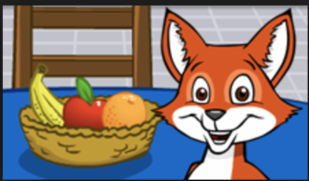

Vocabulary Development
Here is a list of some of the sites my students are using.

There are not many websites designed especially for elementary-age English language learners. In order to provide these students with extra practice in English, it is necessary to examine sites intended for English native speakers. How do students use these sites? First, I introduce a web site in ESL class and allow students to try out a few activities. In order to do this, you will need to have a computer in your room or access to a computer lab. I use wireless laptops in my room so that students can each look at their own screen.